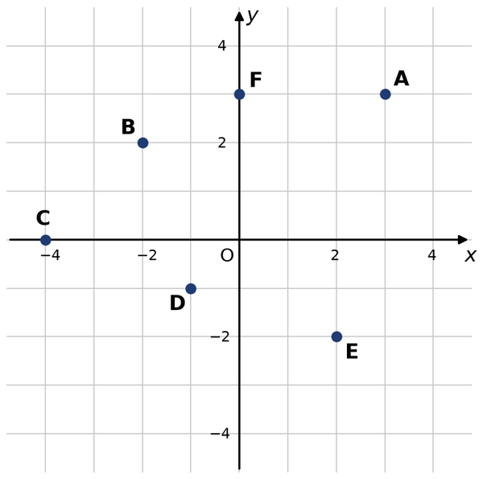

By the end of the worksheet you will be able to:
- find the modulus and the principal argument of a complex number;
- write a complex number in trigonometric form and go back to the algebraic form;
- recognise a form that is not the trigonometric form and correct it;
- multiply and divide complex numbers written in trigonometric form and interpret the result geometrically (rotation, dilation).
1. The modulus and the principal argument
Definition
Let $z=a+bi\ne 0$, with $a,b\in\mathbb{R}$, and let $M(a,b)$ be its image in the plane.
- The modulus of $z$ is $r=|z|=\sqrt{a^2+b^2}$, the length of the segment $OM$.
- The principal argument of $z$, written $\arg z$, is the measure $t\in[0,2\pi)$ of the angle from the half-axis $Ox$ to the ray $OM$, measured anticlockwise. We have $\cos t=\frac{a}{r}$ and $\sin t=\frac{b}{r}$.
The trigonometric form of $z$ is
$$z=r(\cos t+i\sin t),\quad r>0,\ t\in[0,2\pi).$$
The number $0$ has no argument and has no trigonometric form.
Where $M$ lies and what the principal argument is
- On the axes: $a>0\Rightarrow\arg a=0$; $a<0\Rightarrow\arg a=\pi$; $b>0\Rightarrow\arg(bi)=\frac{\pi}{2}$; $b<0\Rightarrow\arg(bi)=\frac{3\pi}{2}$.
- Let $t_0\in\left(0,\frac{\pi}{2}\right)$ be the acute angle with $\operatorname{tg}t_0=\frac{|b|}{|a|}$.
- Quadrant I ($a>0$, $b>0$): $t=t_0$.
- Quadrant II ($a<0$, $b>0$): $t=\pi-t_0$.
- Quadrant III ($a<0$, $b<0$): $t=\pi+t_0$.
- Quadrant IV ($a>0$, $b<0$): $t=2\pi-t_0$.
1.1. From the algebraic form to the trigonometric form
★ Method
We write $z=a+bi$ as $r(\cos t+i\sin t)$
- Find the modulus $r=\sqrt{a^2+b^2}$.
- Find the quadrant from the signs of $a$ and $b$ (or the half-axis, if $a=0$ or $b=0$).
- Find the acute angle $t_0$ from $\operatorname{tg}t_0=\frac{|b|}{|a|}$.
- Choose $t$ by the quadrant: $t_0$, $\pi-t_0$, $\pi+t_0$ or $2\pi-t_0$.
- Check: $r\cos t=a$ and $r\sin t=b$.
Example 1
$z=-1+i\sqrt{3}$. The modulus: $r=\sqrt{1+3}=2$. Since $a<0$ and $b>0$, $M$ lies in quadrant II. From $\operatorname{tg}t_0=\sqrt{3}$ we get $t_0=\frac{\pi}{3}$, so $t=\pi-\frac{\pi}{3}=\frac{2\pi}{3}$.
$$z=2\left(\cos\frac{2\pi}{3}+i\sin\frac{2\pi}{3}\right).$$
Check: $2\cos\frac{2\pi}{3}=-1$ and $2\sin\frac{2\pi}{3}=\sqrt{3}$.
2. When is a form the trigonometric form?
Three conditions
The form $r(\cos t+i\sin t)$ is the trigonometric form only if:
- the factor in front of the bracket is strictly positive;
- $\cos$ and $\sin$ have the same angle, in the interval $[0,2\pi)$;
- $\cos$ gives the real part, $\sin$ gives the imaginary part, and the sign between them is $+$.
Useful corrections, from the reduction formulas:
- $\cos x-i\sin x=\cos(2\pi-x)+i\sin(2\pi-x)$;
- $-\cos x+i\sin x=\cos(\pi-x)+i\sin(\pi-x)$;
- $-\cos x-i\sin x=\cos(\pi+x)+i\sin(\pi+x)$;
- $\sin x+i\cos x=\cos\left(\frac{\pi}{2}-x\right)+i\sin\left(\frac{\pi}{2}-x\right)$.
Example 2
The form $-3\left(\cos\frac{\pi}{5}+i\sin\frac{\pi}{5}\right)$ is not a trigonometric form, because $-3<0$. We use $-\cos x=\cos(\pi+x)$ and $-\sin x=\sin(\pi+x)$:
$$-3\left(\cos\frac{\pi}{5}+i\sin\frac{\pi}{5}\right)=3\left(\cos\frac{6\pi}{5}+i\sin\frac{6\pi}{5}\right).$$
3. Multiplication and division
Formulas
If $z_1=r_1(\cos t_1+i\sin t_1)$ and $z_2=r_2(\cos t_2+i\sin t_2)$, then
$$z_1z_2=r_1r_2\bigl(\cos(t_1+t_2)+i\sin(t_1+t_2)\bigr),$$
$$\frac{z_1}{z_2}=\frac{r_1}{r_2}\bigl(\cos(t_1-t_2)+i\sin(t_1-t_2)\bigr).$$
The moduli multiply (divide), the arguments add (subtract). If the angle you get is not in $[0,2\pi)$, add or subtract $2\pi$.
Geometric meaning
- Multiplying by $\cos t+i\sin t$ rotates the point about $O$ by the angle $t$, anticlockwise.
- Multiplying by a real number $r>0$ is the dilation (homothety) with centre $O$ and ratio $r$.
- Multiplying by $i=\cos\frac{\pi}{2}+i\sin\frac{\pi}{2}$ is the rotation by $\frac{\pi}{2}$.
Example 3
$z_1=2\left(\cos\frac{5\pi}{4}+i\sin\frac{5\pi}{4}\right)$, $z_2=3\left(\cos\frac{5\pi}{6}+i\sin\frac{5\pi}{6}\right)$. We have $\frac{5\pi}{4}+\frac{5\pi}{6}=\frac{25\pi}{12}\ge 2\pi$, and $\frac{25\pi}{12}-2\pi=\frac{\pi}{12}$, so
$$z_1z_2=6\left(\cos\frac{\pi}{12}+i\sin\frac{\pi}{12}\right).$$
Exercises
A. The modulus and the principal argument
-
Plot the images of the complex numbers below, give the modulus and the principal argument of each, and write them in trigonometric form:
a) $z_1=5$;
b) $z_2=-3$;
c) $z_3=2i$;
d) $z_4=-4i$.
-
The figure shows the points $A$, $B$, $C$, $D$, $E$, $F$, the images of the complex numbers $z_A$, $z_B$, $z_C$, $z_D$, $z_E$, $z_F$.

a) Write each number in algebraic form.
b) State the quadrant or the half-axis on which each point lies.
c) Find the modulus and the principal argument of each number.
-
Without finding the argument, state the quadrant in which the image of the number lies and the interval of length $\frac{\pi}{2}$ that contains its principal argument:
a) $z_1=3-7i$;
b) $z_2=-2+5i$;
c) $z_3=-1-4i$;
d) $z_4=6+i$.
-
Plot the set of points $M$ with affix $z$ for which:
a) $|z|=2$;
b) $z\ne 0$ and $\arg z=\frac{\pi}{4}$;
c) $0<|z|\le 2$ and $\arg z\in\left[0,\frac{\pi}{2}\right]$.
B. From the algebraic form to the trigonometric form
-
Write in trigonometric form the numbers:
a) $z_1=1+i$;
b) $z_2=-1+i$;
c) $z_3=\sqrt{3}+i$;
d) $z_4=1-i\sqrt{3}$;
e) $z_5=-2-2i$;
f) $z_6=-\sqrt{3}-i$.
-
Bring the number to algebraic form, then write it in trigonometric form:
a) $z_1=\frac{1+i}{1-i}$;
b) $z_2=\frac{4}{1+i\sqrt{3}}$;
c) $z_3=\frac{\sqrt{3}-i}{1+i\sqrt{3}}$;
d) $z_4=1+i^{2027}$.
-
Solve in $\mathbb{C}$ the equation $z^2-2z+4=0$ and write the solutions in trigonometric form. What do you notice about their arguments?
-
A student writes for $z=-1-i$: “$\operatorname{tg}t=\frac{-1}{-1}=1$, so $t=\frac{\pi}{4}$ and $z=\sqrt{2}\left(\cos\frac{\pi}{4}+i\sin\frac{\pi}{4}\right)$.”
a) Bring the number $\sqrt{2}\left(\cos\frac{\pi}{4}+i\sin\frac{\pi}{4}\right)$ to algebraic form. Is it equal to $z$?
b) Where does the student go wrong? Write the correct trigonometric form of $z$.
C. From the trigonometric form to the algebraic form
-
Write in algebraic form the numbers:
a) $z_1=2\left(\cos\frac{\pi}{3}+i\sin\frac{\pi}{3}\right)$;
b) $z_2=4\left(\cos\frac{5\pi}{6}+i\sin\frac{5\pi}{6}\right)$;
c) $z_3=\sqrt{2}\left(\cos\frac{7\pi}{4}+i\sin\frac{7\pi}{4}\right)$;
d) $z_4=3(\cos\pi+i\sin\pi)$;
e) $z_5=6\left(\cos\frac{4\pi}{3}+i\sin\frac{4\pi}{3}\right)$.
-
Let $z=2\left(\cos\frac{\pi}{6}+i\sin\frac{\pi}{6}\right)$.
a) Write in trigonometric form the numbers $\overline{z}$, $-z$ and $-\overline{z}$. Check the results through the algebraic form.
b) Plot the images of the four numbers. Which symmetries do you notice?
D. Is it the trigonometric form?
-
State whether the form is the trigonometric form of the number. If it is not, write the correct trigonometric form.
a) $3\left(\cos\frac{\pi}{7}+i\sin\frac{\pi}{7}\right)$;
b) $2\left(\cos\frac{\pi}{5}-i\sin\frac{\pi}{5}\right)$;
c) $-4\left(\cos\frac{\pi}{3}+i\sin\frac{\pi}{3}\right)$;
d) $\sin\frac{\pi}{8}+i\cos\frac{\pi}{8}$;
e) $5\left(\cos\frac{9\pi}{4}+i\sin\frac{9\pi}{4}\right)$;
f) $2\left(\cos\frac{\pi}{6}+i\sin\frac{\pi}{3}\right)$.
-
Let $x\in\left(0,\frac{\pi}{2}\right)$. Write in trigonometric form the numbers:
a) $z_1=\sin x+i\cos x$;
b) $z_2=-\cos x+i\sin x$;
c) $z_3=-\cos x-i\sin x$.
Hint: check that the angle you get is in $[0,2\pi)$.
E. Multiplication and division. Geometric meaning
-
Let $z_1=4\left(\cos\frac{5\pi}{12}+i\sin\frac{5\pi}{12}\right)$ and $z_2=2\left(\cos\frac{\pi}{12}+i\sin\frac{\pi}{12}\right)$. Compute in trigonometric form, then in algebraic form:
a) $z_1z_2$;
b) $\frac{z_1}{z_2}$;
c) $\frac{z_2}{z_1}$.
-
Let $z_1=1+i$ and $z_2=\sqrt{3}+i$.
a) Write $z_1$ and $z_2$ in trigonometric form.
b) Compute $z_1z_2$ in two ways: in algebraic form and in trigonometric form.
c) By comparing the results, deduce the values of $\cos\frac{5\pi}{12}$ and $\sin\frac{5\pi}{12}$.
-
Geometric meaning.
a) The point $A$ has the affix $z_A=3+i$. Find the affix of the point $B$, obtained by rotating $A$ about the origin by the angle $\frac{\pi}{2}$.
b) Which geometric transformation takes the point with affix $z$ to the point with affix $(1+i)z$? And to the point with affix $\left(1-i\sqrt{3}\right)z$?
c) The point $P$ has the affix $4$, and the point $Q$ is obtained by rotating $P$ about the origin by the angle $\frac{\pi}{3}$. Find the affix of $Q$ and show that the triangle $OPQ$ is equilateral.
For those who want more
-
Let $x\in(0,\pi)$ and $z=1+\cos x+i\sin x$.
a) Show that $z=2\cos\frac{x}{2}\left(\cos\frac{x}{2}+i\sin\frac{x}{2}\right)$.
b) Justify that this is the trigonometric form of $z$ and give $|z|$ and $\arg z$.
c) Write in trigonometric form the number $1+\cos\frac{2\pi}{3}+i\sin\frac{2\pi}{3}$ and check the result through the algebraic form.